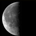

Here are this year's dates of Uposatha days as observed in Thai Buddhism (Dhammayut and Mahānikai sects). This calendar follows the Dhammayut calculation—which, for the days marked with an asterisk, is one day later than the Mahānikai. [1]
 last quarter |
new moon |
first quarter |
full moon |
last quarter |
|
|---|---|---|---|---|---|
| January | 5 | 11 | 19 | 26 | - |
| February | 3 | 10 | 18 | 25 Māgha Pūjā |
- |
| March | 5 | 11 | 19 | 26 | - |
| April | 3 | 10 | 18 | 25 | - |
| May | 3 | 9 | 17 | 24 Visākha Pūjā |
- |
| June | 1 | 8 | 16 | 23 | - |
| July | 1 | 8* | 16* | 22 Āsaḷha Pūjā |
30 |
| August | - | 6 | 14 | 21 | 29 |
| September | - | 5* | 13* | 19 | 27 |
| October | - | 4 | 12 | 19 Pavāraṇā Day |
27 |
| November | - | 3* | 11* | 17 Ānāpānasati Day |
25 |
| December | - | 2 | 10 | 17 | 25 |
Notes
- 1.
- Dates provided by Metta Forest Monastery.